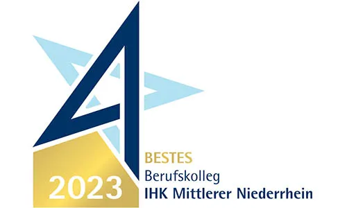
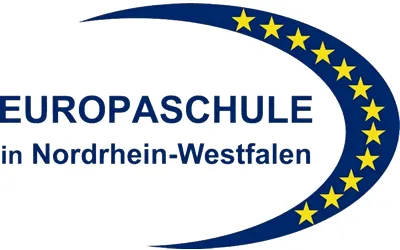
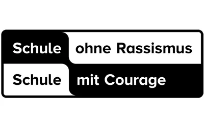

Schulleitung
OStD’ Stephany Kerstges
Schulleiterin
Termine über das Sekretariat
Berufskolleg für Wirtschaft und Verwaltung in Mönchengladbach. Schulleiterin: Stephany Kerstges.
OStD’ Stephany Kerstges
Schulleiterin
Termine über das Sekretariat
Alle Zuständigkeiten im Detail zeigt das Organigramm.
Wir arbeiten gemeinsam daran, dass junge Menschen bei uns ihren Weg in die berufliche Zukunft finden. Wir ermöglichen unseren Schülerinnen und Schülern zukunftsfähige Abschlüsse und bereiten sie darauf vor, die Gesellschaft, in der wir leben, verantwortungsvoll mitzugestalten.
Wir schaffen Rahmenbedingungen, damit Schülerinnen und Schüler Verantwortung für ihren eigenen Lernprozess übernehmen können. Dabei unterstützen wir jede und jeden individuell darin, die eigenen Stärken auszubauen. In unserem Handeln orientieren wir uns an den aktuellen Anforderungen der beruflichen Praxis.
Wir sehen die zunehmende Digitalisierung als große Herausforderung für das Lehren und Lernen und begegnen ihr, indem wir offen sind für neue Medien und Unterrichtskonzepte, die Mensch und Technologie zusammenbringen. Daher richtet sich unsere Ausstattung an den aktuellen Anforderungen aus und unterstützt die Schülerinnen und Schüler in der Bewältigung ihrer digitalen Lebenswelt.
Wir fördern die persönlichen Stärken und Interessen unserer Schülerinnen und Schüler optimal, indem wir uns in den Lehrerteams eng abstimmen und mit unseren außerschulischen Partnern eng kooperieren.
In unserer Schule institutionalisieren wir eine vertrauensvolle Zusammenarbeit durch gemeinsame Unterrichtsentwicklung und -evaluation in langfristig kooperierenden Lehrerteams. So sind wir verlässliche Partner für Eltern, Ausbildungsbetriebe, IHK und unsere Partnerschulen in Europa. Diese Zusammenarbeit lebt von Kontinuität und offenen Dialogen.
Wir wollen, dass unsere Schülerinnen und Schüler gerne zu uns kommen. Deshalb stellen wir den respektvollen, wertschätzenden und unterstützenden Dialog miteinander in den Mittelpunkt unserer Zusammenarbeit an dieser Schule, unabhängig von Position, Herkunft, Kultur, Religion, Hautfarbe, Geschlecht oder Überzeugung.
Diese Verpflichtung zum Dialog schließt ein, dass unsere Regeln für das Schulleben – gemeinsam festgelegte sowie vorgegebene – eingehalten werden und dass wir unsere Werte transparent vermitteln. Wir gehen lösungsorientiert und vertrauensvoll miteinander um.
Wir sind in Europa zu Hause und heißen Europa in unserem Hause willkommen.
Durch die Zusammenarbeit mit unseren Partnerschulen in vielen europäischen Ländern schauen wir über den heimischen Tellerrand und lassen uns von neuen Ideen und Entwicklungen inspirieren.
Wir sind aber auch stolz darauf, uns und unser Wirken zu präsentieren. Gemeinsame Projekte und Besuche stärken den Zusammenhalt und zeigen, dass die Chancen unserer Schülerinnen und Schüler insbesondere in der Vielfalt liegen. Sprachenlernen und sprachliche Zertifizierung sind für uns Werkzeug und Schlüssel für das Leben und Arbeiten im Vereinigten Europa.
Das ist unser Auftrag – und daran lassen wir uns messen.

2012, 2013, 2016, 2017, 2018, 2021, 2023 und 2026 – das Berufskolleg mit den meisten ausgezeichneten Ausbildungsabsolventinnen und -absolventen.

Seit 2009 – als erstes Berufskolleg in Mönchengladbach und als zwölftes landesweit.

Seit 2014 Mitglied im Netzwerk. Wir setzen uns aktiv gegen Diskriminierung und Rassismus ein.
Durch den Austausch von Lehrkräften, Schülerinnen und Schülern und gemeinsame Projekte sind nicht nur Arbeitsbeziehungen, sondern auch echte Freundschaften entstanden.

Der Abschluss der Fachschule für Wirtschaft (Staatlich geprüfte/r Betriebswirt/in) entspricht im Deutschen und Europäischen Qualifikationsrahmen dem Bachelor (Niveau 6). Wer zusätzlich den akademischen Titel möchte, kann verkürzt und nebenberuflich weiterstudieren:
Präsenzstudium, Bachelor nach 3–4 Semestern
Präsenzstudium, Bachelor nach 3–4 Semestern
Fernstudium, Bachelor of Science nach 3 Semestern
Ein anschließendes nebenberufliches Masterstudium ist an allen drei Hochschulen möglich.